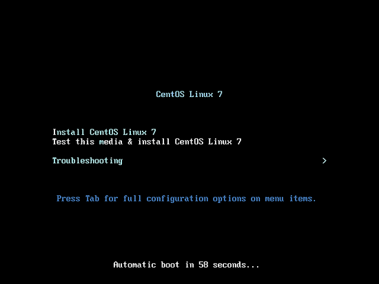
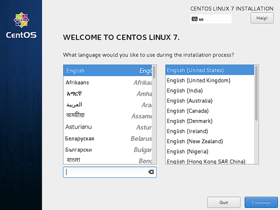
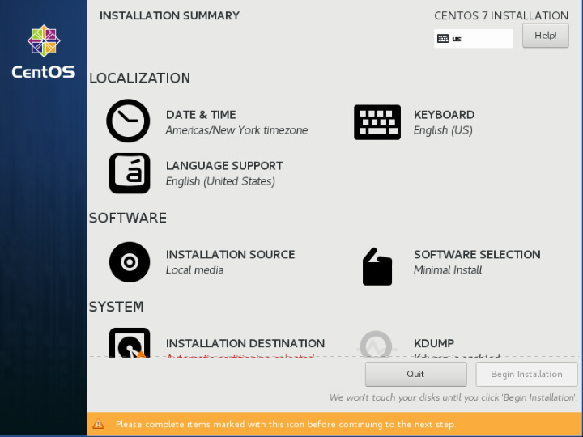
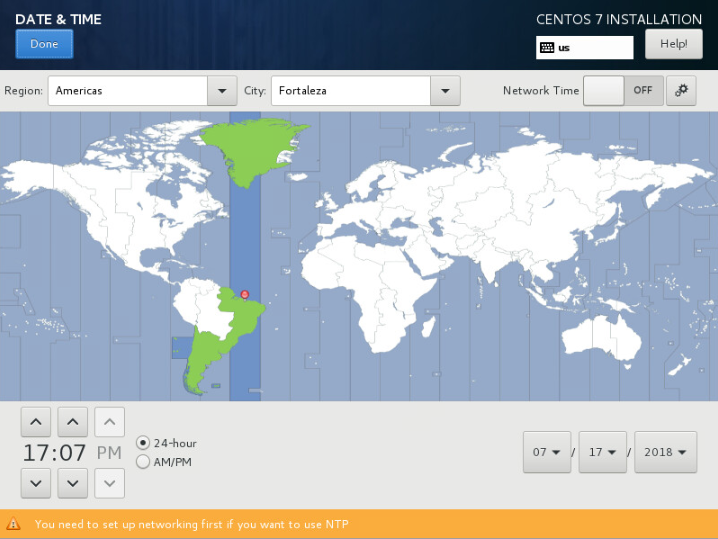
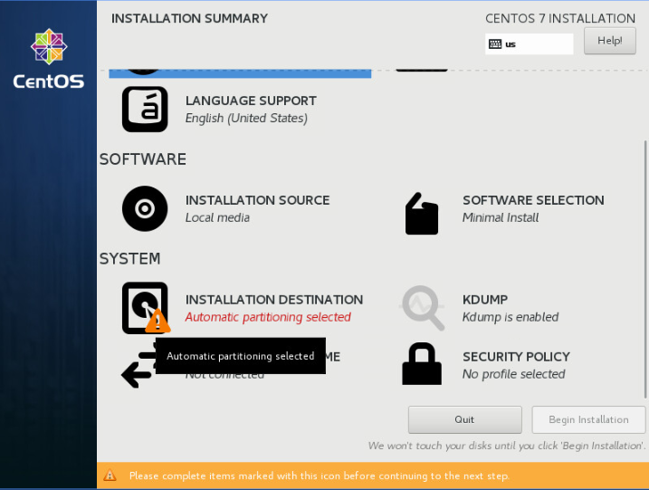
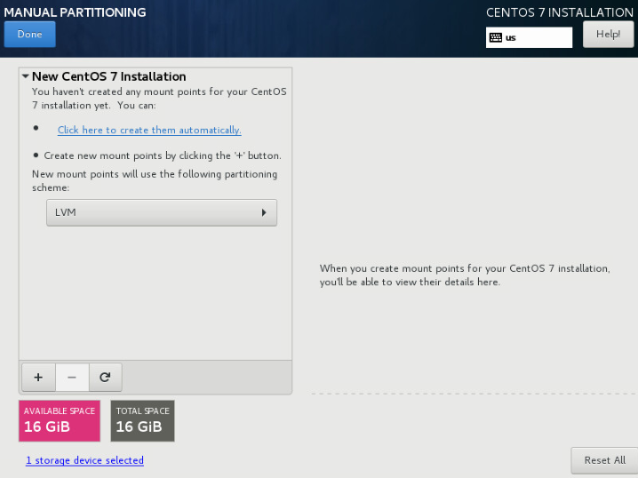
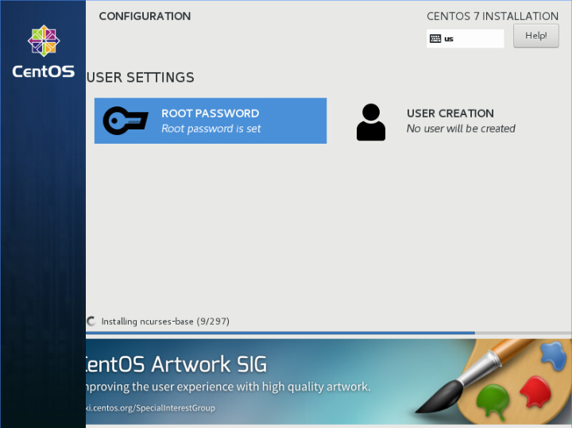
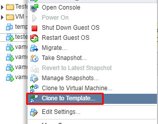

Template CentOS 7
Passo1: Minimal Instalation
Procedimento de instalação do CentOS 7, foi utilizado a ISO Minimal:
- Crie uma VM com o mínimo necessário e adicione a ISO e ligue a VM.
-
Clique on “Install CentOS Linux 7”. 
-
Selecione o Idioma que deseja continuar o processo de instalação. 
-
Click em “Date & Time”. 
-
Selecione o Timezone que o melhor representa. 
-
Clique em “Installation Destionation” 
-
Clique para criar automaticamente . 
-
Defina a senha de ROOT 
{kind=link}
{kind=link}
{kind=link}
{kind=link}
{kind=link}
{kind=link}
{kind=link}
Espere a conclusão da Instalação e reinicie a Máquina.
Passo2: Minimal Instalation
Após a Máquina reiniciar, faça login com a senha definida pelo usuário root.
- É muito comum que o SELinux seja desabilitado. Vamos alterar em execução de “enforcing” para “permissive” com o comando setenforce e posteriormente vamos alterar no arquivo de configuração para na próxima vez que a máquina reinicie já fique com essa configuração realizada.
[root@localhost ~]#
[root@localhost ~]# setenforce 0
[root@localhost ~]# cat /etc/selinux/config
# This file controls the state of SELinux on the system.
# SELINUX= can take one of these three values:
# enforcing - SELinux security policy is enforced.
# permissive - SELinux prints warnings instead of enforcing.
# disabled - No SELinux policy is loaded.
SELINUX=permissive
# SELINUXTYPE= can take one of three two values:
# targeted - Targeted processes are protected,
# minimum - Modification of targeted policy. Only selected processes are protected.
# mls - Multi Level Security protection.
SELINUXTYPE=targeted
[root@localhost ~]# getenforce
Permissive
[root@localhost ~]#
[root@localhost ~]# yum -y install vim wget psmisc htop epel-release
[root@localhost ~]# yum -y install selinux-policy yum-plugin-security
[root@localhost ~]# yum -y install tcpdump net-tools bind-utils telnet nmap
[root@localhost ~]# yum -y install open-vm-tools #(Caso esteja utilizando VMWARE como virtualizador)
[root@localhost ~]# systemctl restart vmtoolsd #(Caso esteja utilizando VMWARE como virtualizador)
[root@localhost ~]# systemctl enable vmtoolsd #(Caso esteja utilizando VMWARE como virtualizador)
[root@localhost ~]#
[root@localhost ~]# yum update -y
[root@localhost ~]#
PASSO 3: Zerando registros
Passos necessários para deixar o seu Sistema o mais labelless possível.
-
Removendo configurações de udev rules, para que a placa de rede ao iniciar o sistema fique a primária padrão.
-
Habilitando a interface sem configuração prévia.
-
Apagando as chaves criadas, (novas serão criadas durante o processo de boot)
-
Limpando arquivos no filesystem e logs. Em seguida, desligando a máquina.
[root@localhost ~]# [root@localhost ~]# yum clean -q all [root@localhost ~]# [root@localhost ~]# service rsyslog stop > /dev/null [root@localhost ~]# service auditd stop > /dev/null [root@localhost ~]# [root@localhost ~]# logrotate -f /etc/logrotate.conf [root@localhost ~]# rm -f /var/log/*-???????? /var/log/*.gz [root@localhost ~]# rm -rf /var/log/anaconda [root@localhost ~]# rm -f /var/log/dmesg.old [root@localhost ~]# [root@localhost ~]# cat /dev/null > /var/log/audit/audit.log [root@localhost ~]# cat /dev/null > /var/log/wtmp [root@localhost ~]# cat /dev/null > /var/log/lastlog [root@localhost ~]# cat /dev/null > /var/log/grubby [root@localhost ~]# [root@localhost ~]# rm -rf /tmp/* [root@localhost ~]# rm -rf /var/tmp/* [root@localhost ~]# [root@localhost ~]# rm -rf ~root/.ssh/ [root@localhost ~]# rm -f ~root/anaconda-ks.cfg [root@localhost ~]# [root@localhost ~]# rm -f ~root/.bash_history [root@localhost ~]# rm -f /home/*/.bash_history [root@localhost ~]# [root@localhost ~]# touch /.unconfigured [root@localhost ~]# [root@localhost ~]# shutdown -h now [root@localhost ~]# -
Convertendo a máquina em template 
{kind=link}
{kind=link}
{kind=link}
Com isso finalizamos o template, para novas máquinas virtuais iniciem dentro do padrão, basta clicar no template com botão direito e clicar em “Criar nova VM a partir do Template”.